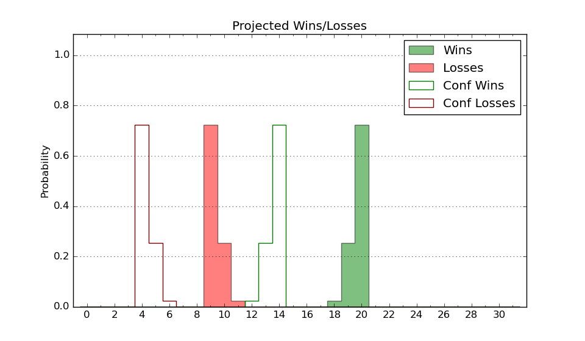

| Home | Game Probabilities | Conferences | Preseason Predictions | Odds Charts | NCAA Tournament |
| City: | Hempstead, New York | |
| Conference: | Colonial (3rd)
| |
| Record: | 11-4 (Conf) 17-9 (Overall) | |
| Ratings: | Comp.: 7.7 (104th) Net: 7.7 (104th) Off: 110.6 (55th) Def: 102.9 (178th) SoR: 12.0 (89th) |
| Remaining | ||||||
|---|---|---|---|---|---|---|
| Date | Opponent | Win Prob | Pred. | |||
| 2/24 | Elon (292) | 92.4% | W 82-65 | |||
| 2/26 | William & Mary (328) | 95.7% | W 85-63 | |||
| 2/28 | College of Charleston (175) | 80.7% | W 86-75 | |||
| Previous | Game Score | |||||
| Date | Opponent | Win Prob | Result | Off | Def | Net |
| 11/9 | @Houston (4) | 5.6% | L 75-83 | 13.0 | 2.4 | 15.4 |
| 11/13 | @Duquesne (262) | 73.1% | W 73-63 | 1.9 | 6.3 | 8.2 |
| 11/16 | @Iona (85) | 28.9% | L 74-82 | -0.5 | -1.0 | -1.5 |
| 11/19 | @Maryland (89) | 30.0% | L 67-69 | -8.3 | 14.6 | 6.3 |
| 11/22 | @Richmond (93) | 31.6% | L 68-81 | 0.4 | -11.5 | -11.0 |
| 11/27 | Detroit (229) | 86.8% | W 98-84 | 13.4 | -13.6 | -0.2 |
| 12/1 | Princeton (118) | 70.5% | W 81-77 | -4.0 | -1.1 | -5.1 |
| 12/4 | Bucknell (338) | 96.4% | W 88-69 | 6.0 | -5.7 | 0.3 |
| 12/8 | @Stony Brook (249) | 70.9% | L 62-79 | -28.8 | -8.8 | -37.6 |
| 12/18 | (N) Arkansas (26) | 25.4% | W 89-81 | 15.2 | 8.1 | 23.3 |
| 12/22 | @Monmouth (124) | 43.1% | W 77-71 | 8.9 | 2.4 | 11.3 |
| 12/29 | @William & Mary (328) | 86.8% | L 62-63 | -27.6 | 7.9 | -19.7 |
| 1/9 | @James Madison (209) | 61.5% | W 87-80 | 12.3 | -3.6 | 8.6 |
| 1/11 | @Towson (79) | 27.2% | L 66-78 | -7.3 | -2.9 | -10.2 |
| 1/15 | Delaware (137) | 74.9% | W 82-77 | -0.7 | -3.5 | -4.2 |
| 1/17 | Drexel (143) | 76.4% | W 71-68 | 0.4 | -7.0 | -6.7 |
| 1/22 | @Northeastern (248) | 70.9% | W 72-50 | 1.0 | 23.1 | 24.2 |
| 1/27 | @College of Charleston (175) | 55.0% | W 76-73 | -5.6 | 8.3 | 2.8 |
| 1/29 | @UNC Wilmington (224) | 64.3% | L 72-78 | -9.3 | -4.7 | -14.0 |
| 2/3 | Towson (79) | 56.0% | L 68-78 | -8.5 | -10.2 | -18.8 |
| 2/5 | James Madison (209) | 84.5% | W 85-78 | -6.9 | -0.2 | -7.1 |
| 2/7 | UNC Wilmington (224) | 86.0% | W 73-71 | -5.3 | -5.7 | -11.0 |
| 2/10 | @Drexel (143) | 48.7% | W 83-73 | 10.0 | 5.0 | 14.9 |
| 2/12 | @Delaware (137) | 46.7% | W 80-66 | 8.0 | 14.9 | 22.9 |
| 2/15 | @Elon (292) | 78.1% | W 97-64 | 31.2 | 2.8 | 34.0 |
| 2/19 | Northeastern (248) | 89.2% | W 76-73 | -4.0 | -18.0 | -22.0 |
| Stats & Trends | |||||
|---|---|---|---|---|---|
| Current | Day | Week | Month | Season | |
| Composite | 7.7 | +0.0 | +0.9 | +1.6 | +4.9 |
| Comp Rank | 104 | +1 | +5 | +11 | +64 |
| Net Efficiency | 7.7 | +0.0 | +0.8 | +1.2 | -- |
| Net Rank | 104 | -- | +5 | +6 | -- |
| Off Efficiency | 110.6 | +0.0 | +1.5 | +0.8 | -- |
| Off Rank | 55 | -2 | +13 | +4 | -- |
| Def Efficiency | 102.9 | +0.0 | -0.6 | +0.4 | -- |
| Def Rank | 178 | +1 | -9 | +23 | -- |
| SoS Rank | 118 | +1 | -13 | -62 | -- |
| Exp. Wins | 19.7 | +0.8 | +1.2 | +4.0 | +5.7 |
| Exp. Conf Wins | 13.7 | +0.8 | +1.2 | +4.0 | +3.7 |
| Conf Champ Prob | 74.8 | +54.0 | +54.9 | +62.9 | +63.9 |

| Advanced Stats | ||
|---|---|---|
| Stat | Value | Rank |
| Off Eff FG % | 0.534 | 64 |
| Off Ast Ratio | 0.162 | 55 |
| Off ORB% | 0.239 | 304 |
| Off TO Rate | 0.134 | 19 |
| Off FT Ratio | 0.210 | 355 |
| Def Eff FG % | 0.540 | 313 |
| Def Ast Ratio | 0.169 | 339 |
| Def ORB% | 0.250 | 59 |
| Def TO Rate | 0.182 | 69 |
| Def FT Ratio | 0.262 | 79 |